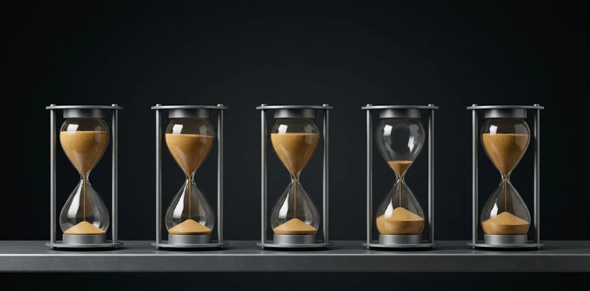

On September 18th, 2026, AWS added Moonshot’s Kimi K3 to Bedrock at Moonshot’s own price to the cent: $3 per million input tokens and $15 per million output tokens.[1] Ten days earlier, a joint advisory from the NSA, CISA, and the FBI said that “Moonshot AI extracted significant Claude Fable 5 data to train its Kimi-K3 model.”[2] The launch post doesn’t mention it. I don’t think AWS did anything wrong by listing the model. The line I care about isn’t in the launch post. It’s on the model card, and if you pick models on a managed cloud, it’s the line you should be reading first.
Here it is:
“EOL no sooner than: Not Applicable, at least 45 day EOL Notice will be provided.”[3]
In plain English: AWS promises to keep K3 running for no minimum period, and to warn you 45 days before it switches it off.
What did AWS promise before?
A lot more. On September 3rd, Bedrock’s lifecycle page said that “once a model launches on Amazon Bedrock, it will remain on Amazon Bedrock for at least 12 months before the EOL date”, with at least six months’ notice before retirement.[4] The Chinese models already on the shelf got exactly that: Kimi K2.5, launched in January, is promised until January 2027.[5]
Some time between September 3rd and September 9th, the page split in two. The old text moved to a “Legacy” page covering models launched before September 7th. A new page covers everything after. Each model card now carries its own floor, and one of two notice periods: “There are two Legacy periods: 6 months and 45 days. Most models have a 6-month Legacy period.”[6] I can find no announcement: nothing in the Bedrock document history. And the new page doesn’t say who gets 45 days, or why.
Two models have launched under the new rules. On September 19th, I checked all 128 model cards on Bedrock.[5] OpenAI’s GPT-6 Astra, launched September 8th, is promised until September 8th, 2027, with six months’ notice.[7] Kimi K3 got no floor and 45 days. It is the only card on the entire shelf with a 45-day notice.
That matters because K3 is not the only accused model AWS sells. The advisory named six companies, and five of them are already on Bedrock: DeepSeek, Alibaba’s Qwen, MiniMax, Z.AI, and Moonshot itself. That is nineteen cards, K3 included. The other eighteen all promise a year on the shelf and six months’ notice.[5] They arrived before the rewrite. K3 arrived after it.
The advisory came out on September 8th, inside that September 3rd to 9th window. The web archive can’t tell me whether AWS rewrote the page before or after it, and I’m not going to pretend otherwise.
Why write a clause you don’t need?
AWS doesn’t need a 45-day clause to obey the law. If Moonshot lands on the Entity List, or Congress bans the model for some purpose, the contract gives way to the statute, and AWS pulls the model on whatever schedule the law sets. Congress has already done this once: the Defense Authorization Act signed in December 2025 gave the Pentagon 30 days to remove DeepSeek from its systems, and the Senate’s bill for next year would add Moonshot to the same list.[8]
So the 45 days aren’t about the law. They’re about everything short of it. A letter from a committee chairman. A big customer whose own contracts rule out the model. Under the old rules, AWS would owe K3 customers at least a year on the shelf, with six months’ warning before the end. Under the new ones, it can leave in about six weeks without breaking a promise.[3][4]
I don’t know that AWS set the term with the advisory in mind. But if it did, this is what it would look like: sell the model, keep the exit short, and don’t explain the rule.
K3’s license says that a company running it as a paid service with more than $20 million in revenue over twelve months “must enter into a separate agreement with Moonshot AI”.[9] Bedrock is well past $20 million. Either AWS has that agreement, or it falls under the license’s exemption for Moonshot’s “certified inference partners”. Both are relationships with Moonshot, and neither AWS page specifies which.
AWS’s side of it
AWS has hosted Chinese open-weight models since DeepSeek-R1 in January 2025 under standard terms.[10] No US rule forbids a company from deploying K3 in its own business.[11] And AWS says the model runs inside its own walls: “Your data is processed within the AWS data boundary, is not shared with the model provider, and is not used to train the underlying model.”[1]
On September 10th, Anthropic, which has committed more than $100bn to AWS over ten years, reported that Moonshot had “silently forwarded customer requests to Claude, instead of processing them using Kimi”.[12] On Bedrock, by AWS’s account, that can’t happen: the requests stay inside AWS. For a customer, self-hosting is AWS’s unaudited answer to the forwarding problem, and it only covers Bedrock: AWS Marketplace also sells Moonshot’s own Kimi API Platform, run by Moonshot. Moonshot’s only public statement since the report, on Weibo on September 12th, called rumors about its founder and staff “pure fabrication”; I can’t find one that answers the advisory or the forwarding claim.[12]
It’s also possible that 45 days is simply how AWS will treat open-weight models going forward, since the provider isn’t there to promise support. That’s a fair reading, and the evidence can’t rule it out yet. Nor can it rule out a third: Astra arrived under AWS’s partnership with OpenAI, and K3 under nothing comparable.[7]
What makes me doubt the open-weight explanation is the comparison. Microsoft runs the same kind of shelf and prints the terms in a table. Its other outside-lab models run for twelve months; the notice on a generally available model is at least 60 days; and the exit for trouble is written out, with its reason: if a model “is found to have compliance or security issues, Microsoft reserves the right to invoke an emergency retirement with shortened notice”.[13] Microsoft sells Kimi as well, through Fireworks, and that tier is harsher than AWS’s, not softer: 15 days’ notice, with one retirement date printed on every Fireworks model page, July 1st, 2027.[14]
Microsoft prints the rule, the date and the reason before you build. AWS gave one model a shorter exit than anything else on its shelf and published none of the three. Amazon’s 2024 letter to shareholders ends: “It remains Day One.”[15] When Microsoft is the one saying things plainly, is it still day one?
The meter, again
In July I argued that AWS has decided to own the meter, not the model: it sells Claude at Anthropic’s price and makes its money underneath.[16] K3 at Moonshot’s price is the same move. What’s new is that the landlord has started writing different leases for different tenants, and setting the shorter one on itself, in advance, on a page most customers never open.
What to do about it
If you’re building on Bedrock, add one line to your model selection: open the card, read “EOL no sooner than” and “Legacy period”, and write both into your design document next to the price. If you hold an Enterprise Discount Program or private pricing deal, check whether it overrides this page. If the answer is 45 days, ask yourself one question: could I move this workload in six weeks?
For K3, the answer can be yes, because the weights are public. You can download them today, test them on a second host (your own GPUs, another provider), and keep that path warm. Keeping it warm isn’t free: you pay for a host you may never use. The 45 days is then a migration window, not a cliff. For a closed model on a 45-day term, you’d have no such option.
What would prove me wrong? The next Western open-weight model to launch on Bedrock showing up with 45 days. Then this is a rule about open weights, not about China. Or the next Chinese model getting six months.
The house style
On March 1st, an AWS availability zone in the Emirates caught fire. The incident report said it had been “impacted by objects that struck the data center, creating sparks and fire”. Objects. About a day and a half later, with the attack on the UAE leading the news, AWS named them: two of its buildings there had been “directly struck by drones”.[17] Then it went quiet again. Three weeks on, when it waived the region’s bills, the email gave no cause at all.[18]
This story is written in the same hand. The policy changed with no announcement. The short tier has no published criteria. AWS has said nothing about what the advisory means for Moonshot. None of it is a lie. None of it is a statement either. Everything is written down precisely in Seattle, in a place where nobody will read it.
So read it. It’s one line on the model card.
Notes
[1] AWS, “Introducing Kimi K3 on Amazon Bedrock“, September 18th, 2026, accessed September 19th, 2026: “Your data is processed within the AWS data boundary, is not shared with the model provider, and is not used to train the underlying model.” Prices from the BedrockKimi K3 model card, accessed September 19th, 2026, Standard tier, Global cross-Region: $3.00 input, $15.00 output, $0.30 cache read per million tokens; the US cross-Region profile (”US CRIS” in AWS’s price table) is 1.10x on every cell. Moonshot’s ownpricing page, accessed September 19th, 2026, lists kimi-k3 at $3.00 input (cache miss), $15.00 output, $0.30 cached input. The document is the AWS model card; the independent confirmation of the price match is Moonshot’s page.
[2] NSA, CISA and FBI,Cybersecurity Advisory AA26-251A, September 8th, 2026, section on Moonshot AI, accessed September 19th, 2026: “Notably, Moonshot AI extracted significant Claude Fable 5 data to train its Kimi-K3 model and GPT-4o data to train its Kimi-K2 model.” The record copy is the PDF on media.defense.gov, which refuses automated requests; anarchived copydates from September 9th, 2026. The piece reports what the advisory says, not that the allegation is proven. The advisory’s reference list cites Anthropic’s earlier post “Detecting and preventing distillation attacks”, so Anthropic’s September 10th report, which came two days after the advisory, is not an independent confirmation of the allegation.
[3] BedrockKimi K3 model card, accessed September 19th, 2026: “Model launch date: 18th Sept 2026 EOL no sooner than: Not Applicable, at least 45 day EOL Notice will be provided Legacy period: at least 45 days”. The newModel lifecycle page, accessed September 19th, 2026, defines the two fields: “An EOL no sooner than date: the model will not reach EOL before this date” and “The Legacy period: the notice period before EOL.” Archived copy of the card:20260919175108, which carries the same line. The launch post does not state the retirement terms. The document is the live card; the record copy is the archive; what the fields mean comes from the lifecycle page.
[4] Bedrock lifecycle page as archived on September 3rd, 2026,Wayback copy 20260903155829: “Once a model launches on Amazon Bedrock, it will remain on Amazon Bedrock for at least 12 months before the EOL date.” and “A model will be in the Legacy state for at least 6 months before the EOL date.” The same sentences now sit on theModel lifecycle (Legacy) page, accessed September 19th, 2026, under the note “This page applies to all models launched on Amazon Bedrock before September 7, 2026.” The document is the archived copy; the independent confirmation is the live Legacy page.
[5] Author’s census of every model card linked from the Bedrockmodel cards index, fetched September 19th, 2026: 128 cards linked, 127 print lifecycle fields, 126 give “Legacy period: at least 6 months”, one (Kimi K3) gives 45 days; only GPT-6 Astra and Kimi K3 carry a launch date on or after September 7th, 2026. Examples: theKimi K2.5 card, “Model launch date: Jan 27, 2026 EOL no sooner than: Jan 27, 2027 Legacy period: at least 6 months”; theDeepSeek V3.2 card, “Dec 01, 2025 … Dec 01, 2026 … at least 6 months”; theQwen3 Coder Next card, “Feb 04, 2026 … Feb 04, 2027 … at least 6 months”. Of the six companies named in the advisory, five have models on Bedrock: DeepSeek (3 cards), Qwen (7), MiniMax (3), Z.AI (3) and Moonshot (3, including K3); StepFun has none. All eighteen cards other than K3 give a 12-month floor and “at least 6 months”. Spot-checked live on September 20th, 2026: theDeepSeek V3.2 card(”Dec 01, 2025 … Dec 01, 2026 … at least 6 months”), theGLM-5 card(”Feb 11, 2026 … Feb 11, 2027”) and theMiniMax M2.5 card(”Feb 12, 2026 … Feb 12, 2027”). Raw lines are kept with the piece’s working files. The index stood at 128 cards on September 19th and 127 on September 20th, after Claude Mythos Preview was delisted; no new card had appeared by September 20th.
[6] BedrockModel lifecycle page, accessed September 19th, 2026, archived at20260919173232: “This page describes the model lifecycle policy for models launched on Amazon Bedrock on or after September 7, 2026.” and “There are two Legacy periods: 6 months and 45 days. Most models have a 6-month Legacy period.” Dating: theWayback index for the pagelists copies on August 2nd, September 3rd and September 19th, 2026; the Legacy page’s first archived copy is September 9th, 2026, 22:35 UTC, and the Astra card in the new format was archived September 9th, 2026, 09:36 UTC. The Bedrockdocument history, accessed September 19th, 2026, has no entry for the change.
[7] BedrockGPT-6 Astra model card, accessed September 19th, 2026: “Model launch date: September 8, 2026 EOL no sooner than: September 8, 2027 Legacy period: at least 6 months”. Archived on September 9th, 2026, at20260909093622, which carries the same fields. The document is the live card; the independent confirmation is the archived copy. The OpenAI models came to Bedrock under the agreement Amazon announced onApril 28th, 2026: “We are excited to announce that starting today, the latest OpenAI models will be available on Amazon Bedrock.” No comparable announcement names Moonshot; its listed tie to AWS is a Marketplace seller page (note [12]).
[8] The statute isPublic Law 119-60, the National Defense Authorization Act for Fiscal Year 2026, enacted December 18th, 2025, Sec. 1532: “Not later than 30 days after the date of the enactment of this Act, the Secretary of Defense shall require the exclusion and removal of covered artificial intelligence from the systems and devices of the Department of Defense.” The Senate’s FY2027 bill,S. 4784 as reported, Sec. 1651, would amend Sec. 1532 to add AI developed by Moonshot AI among others; as reported, not enacted. Its cloture vote on the motion to proceed failed 50–46 on July 14th, 2026 (Senate roll call 195, accessed September 19th, 2026). Both are discussed, with their texts, inSelective Availability.
[9] Moonshot AI,Kimi K3 licence, section 2, accessed September 19th, 2026: “the Licensee must enter into a separate agreement with Moonshot AI before using the Software or its derivative works for any commercial purpose”, applying to a Model-as-a-Service operator whose aggregate revenue with affiliates exceeds $20 million over any consecutive 12 months; Moonshot’s “certified inference partners” are exempt. The same text is in Moonshot’sGitHub copy of the licence, accessed September 19th, 2026, identical apart from whitespace. Neither AWS page states whether an agreement exists.
[10] AWS News Blog, “DeepSeek-R1 models now available on AWS“, January 30th, 2025: “We highly recommend integrating your deployments of the DeepSeek-R1 models with Amazon Bedrock Guardrails to add a layer of protection for your generative AI applications.” Its Bedrockcard, accessed September 19th, 2026: “Model launch date: Jan 20, 2025 EOL no sooner than: Jan 20, 2026 Legacy period: at least 6 months”.
[11] The negative search is the author’s, rerun September 19th, 2026. TheFederal Register documents API, publication dates January 1st to September 19th, 2026, returns 0 documents for “Moonshot AI” (the bare word “Moonshot” returns Defense Production Act notices that use the word, not the company). TheeCFR search APIover Title 15, which holds the Entity List, returns 0 for “Moonshot”. The one statute that bans a Chinese model, Public Law 119-60, names DeepSeek and covers Pentagon systems and contract work (note [8]), and S. 4784 is not law. A registry search can only see rules; the same search was first run forSelective Availabilitythrough September 10th, 2026.
[12] Anthropic,threat intelligence report, September 2026, published September 10th, 2026, accessed September 19th, 2026: “We discovered that Moonshot AI, the company that produces the Kimi family of models, silently forwarded customer requests to Claude, instead of processing them using Kimi.” The commitment is Anthropic’s own, in “Anthropic and Amazon expand collaboration for up to 5 gigawatts of new compute“, April 20th, 2026, accessed September 19th, 2026: “We are committing more than $100 billion over the next ten years to AWS technologies, securing up to 5GW of new capacity to train and run Claude.” Amazon’spost of the same daygives the same figure. AWS Marketplace lists the “Kimi API Platform“, seller “MOONSHOT AI”, delivered as software as a service through private offers and covering K3 among other Kimi models, accessed September 19th, 2026; the page’s embedded data gives a creation date of June 3rd, 2026. It is Moonshot’s service, not Bedrock’s. Moonshot’s statement of September 12th, 2026, on its official Weibo account, as quoted byKocpcon September 13th, 2026: “近日網傳關於公司創辦人及員工的相關資訊純屬虛構，係惡意造謠。月之暗面已第一時間向公安機關報案” (author’s translation: information circulating online about the company’s founder and employees is pure fabrication and malicious rumour; Moonshot has reported it to the police). The statement does not address the advisory or Anthropic’s allegation; searches in English and Chinese on September 19th, 2026 found no Moonshot statement that does.
[13] Microsoft, “Foundry Models lifecycle and support policy“, updated July 24th, 2026, accessed September 19th, 2026: “Generally available models from Anthropic, DeepSeek, Fireworks, and Mistral AI follow a 12-month lifecycle instead of the standard 18-month lifecycle.” and “If a model is found to have compliance or security issues, Microsoft reserves the right to invoke an emergency retirement with shortened notice.” GA retirement notice: “At least 60 days before retirement”. The catalogue entry isFW-Kimi-K3, accessed September 19th, 2026: “Generally available”, publisher Fireworks, created by Moonshot AI.
[14] Microsoft, “Model retirement schedule“, updated September 14th, 2026, accessed September 20th, 2026, under “Foundry Models from partners and community”, Fireworks: “Fireworks models on Standard (Per-Token) inference offerings are subject to a 15-day notice period prior to model retirement.” Every Fireworks row on that page carries the same retirement date, 2027-07-01, including FW-Kimi-K2.5, FW-DeepSeek-V3.2 and FW-GLM-5; FW-Kimi-K3 is in the catalogue but has no row on the schedule yet. This page is more recent and more specific than the policy page in note 13, and it governs: the 12-month lifecycle in that policy is not what a Fireworks-served model gets on notice.
[15] Andy Jassy,2024 letter to shareholders, accessed September 20th, 2026, closing line: “It remains Day One.” Jassy’s2025 letter, published April 2026, reprints the 1997 letter in full (”this is Day 1 for the Internet and, if we execute well, for Amazon.com”).
[16] Our earlier piece:Amazon Priced the Frontier and Declined It, July 29th, 2026: “the durable position is always the meter”, and “AWS doesn’t mark Claude up.”
[17] The wording is AWS’s own, posted to its Health Dashboard on March 1st, 2026 and reported on the wire that morning; our pieceObjects That Struck the Data Center, March 2nd, 2026, quotes it and sets it against that week’s IRGC barrage on the UAE. AWS named the cause in a dashboard post the following day: two UAE facilities “directly struck by drones”, a third in Bahrain hit by “a drone strike in close proximity”, as reported byDataCenterDynamicson March 3rd, 2026 (read September 20th, 2026 in the Wayback copy of May 28th, 2026, the site refusing automated requests) and byCBS Newson March 3rd, 2026, accessed September 20th, 2026: “Drones directly struck two Amazon Web Services facilities in the United Arab Emirates, and a drone strike near an Amazon data center in Bahrain also damaged that facility, the company said in a post on Monday on AWS’s health dashboard.” AWS has not attributed the strikes to Iran; our March piece calls the correlation “strong but circumstantial” and notes the site may have been hit by intercepted debris rather than directly. That piece dates the update at “seventy-two hours”; the statement it describes came the evening of March 2nd, about a day and a half after the first report.
[18] Corey Quinn, “AWS would prefer to forget March ever happened in its UAE region“, The Register, March 26th, 2026, accessed September 20th, 2026, on the billing-waiver email: “No explanation. No mention of the Iranian drone strikes that physically destroyed two of three availability zones in the region on March 1st.”